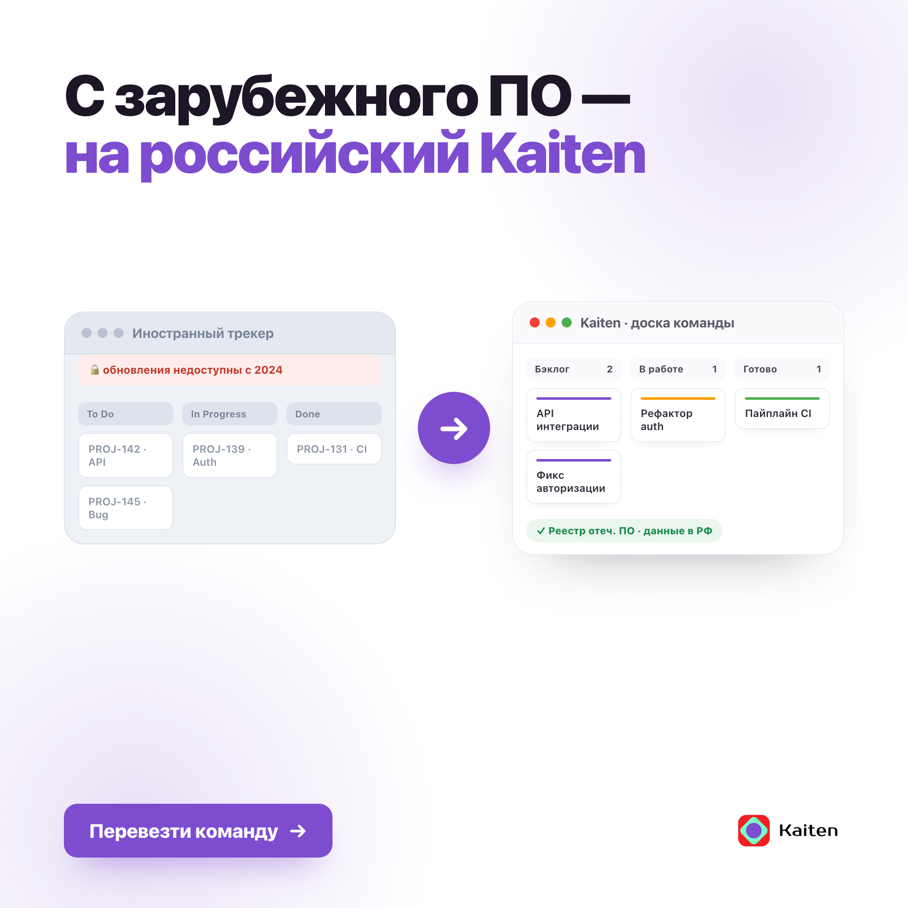
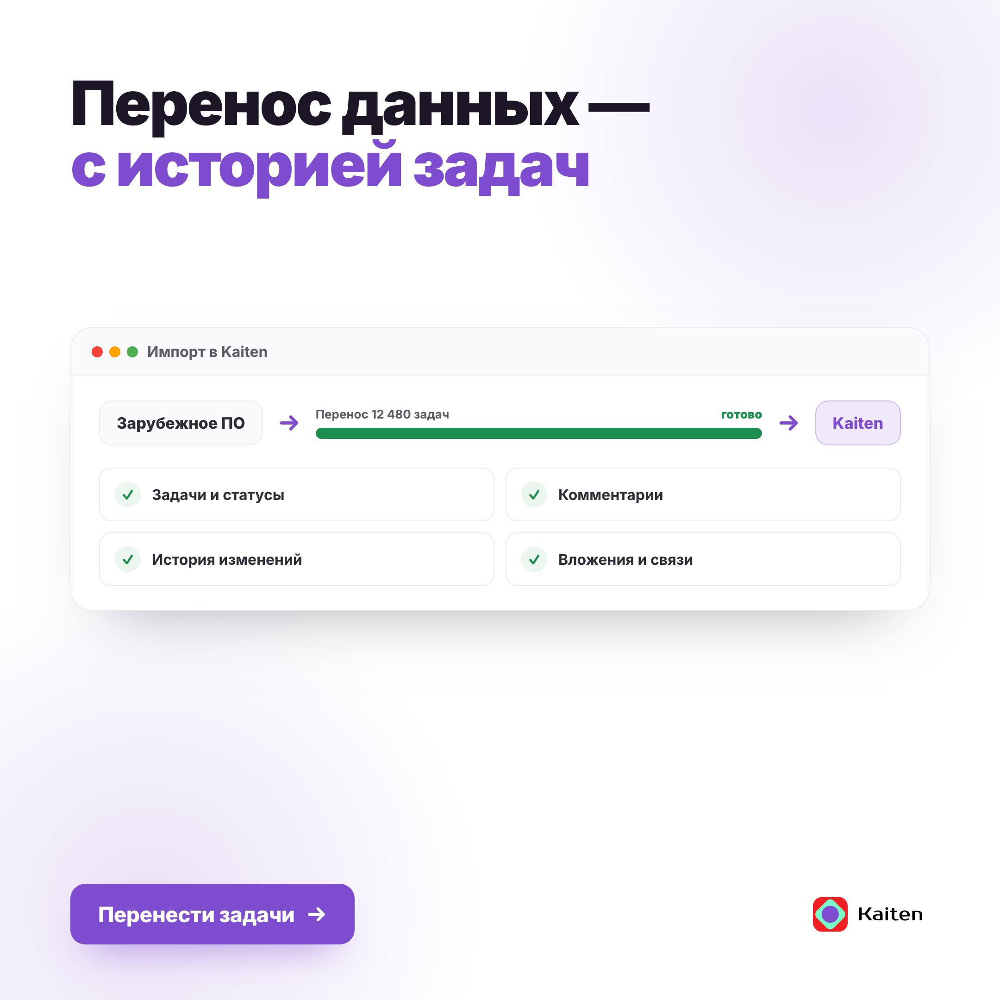

Брать в работу — победитель сета
Заход на непрерывности и суверенитете: зависимость от зарубежного ПО = риск ИБ и простоя. Продукт отвечает пруфами — реестр отеч. ПО, сертификат, 152-ФЗ, on-premise, доверие крупных. Без опоры на один иностранный продукт.
TL;DR: Сильнейший заход (85.6). Бьёт EvaTeam и остальных конкретикой суверенитета. ⚠️ Голос-профиль — гипотеза, реальных постов нет.





| Линза | Вес | Балл | Вердикт линзы |
|---|---|---|---|
| Message–Market Fit | ×2.5 | 88 | Зависимость от зарубежного ПО (не обновляется → уязвимости ИБ, риск отключения → простой) — живой нерв канала об импортозамещении. Узнаётся ИТ-руководителем и ответственным за импортозамещение мгновенно |
| Persona / ICP Fit | ×2 | 86 | Ядро — Руководитель управления по импортозамещению и CIO. Реестр/сертификат/152-ФЗ/on-prem закрывают их мандат и регуляторные требования |
| Objections & Positioning | ×2 | 84 | Без «звона» (за который сегмент снимает доверие): факт риска + пруфы суверенитета. Не завязано на один иностранный продукт — устойчивее к возражениям |
| Claims Accuracy & Risk | ×2 | 86 | Реестр отеч. ПО, сертификат «Промтехстандарт», 152-ФЗ, данные РФ, on-premise, 100 000+ клиентов, Free — сверено с product-facts (§26, §54) и company-overview |
| Channel & Funnel / CTA | ×1.5 | 84 | Прямая ссылка на отраслевой лендинг, «перейти на отечественное». Оффер-пост, первым касанием |
| Creative & Copy Craft | ×1 | 84 | Новостной регистр канала, 🔹-буллеты, «факт → вывод для роли». Свобода от шаблонного скелета |
⚠ Оговорка гейта
Пост в деловом новостном регистре с 🔹-буллетами и рамкой импортозамещения соответствует описанию канала. Без корпуса voice-match не откалиброван.Зарубежное ПО для управления задачами перестало обновляться для команд из России. Патчей безопасности нет, поддержки нет — уязвимости копятся, а гарантий работы никто не даёт. INF
дословная боль ICP-роли «Руководитель управления по импортозамещению»: «не обновляется → уязвимости ИБ»
Для бизнеса это не «неудобно», а риск: при отказе сервиса процессы встают — задержка релизов, срыв контрактов. Для госзакупок и финсектора облачный иностранный сервис ещё и не проходит по регуляторным требованиям. INF
боли ICP: «паралич, задержка релизов, срыв контрактов» (Head of Engineering); «не соответствует регуляторам/госзакупкам» (CIO банка, замминистра)
Kaiten — российская платформа управления процессами на замену: задачи, agile-доски, документы и база знаний в одной системе. FACT
платформа управления процессами, задачи/доски/документы/база знаний (§34, §40, §43)
🔹 Единый реестр отечественного ПО, сертификат «Промтехстандарт», соответствие 152-ФЗ, данные в России, установка на свой сервер.
🔹 На Kaiten уже 100 000+ компаний — Сбер, S7, Ростелеком, Норникель. Бесплатный тариф не ограничен по числу участников. FACT
реестр/сертификат/152-ФЗ/данные РФ/on-prem/клиенты (§26, company-overview); Free (§54)
Перейти на отечественное: kaiten.ru/teams/kaiten-for-it FACT
отраслевой лендинг; UTM/erid при публикации
🎯 Поведенческий профиль: «Конверсионный»
Действия панели: 2× клик (Импортозамещение, Head of Engineering) · 1× пересылка (CIO банка) · 1× сохранение на закупку (замминистра). Все четыре — ЛПР или владельцы мандата. Первым касанием. Метрика — CTR, заявки на демо/миграцию.Урок конкурентов → ниша конкретики
EvaTeam владеет тем же суверенитет-оффером (бесплатный on-prem), но проигрывает на подаче — «звон» топит факт. Наш выигрыш: конкретика (реестр, сертификат, 152-ФЗ, доверие крупных) без усилителей и без опоры на один иностранный продукт.| Риск / правка | Приор. | Суть |
|---|---|---|
| Голос-профиль — гипотеза, постов нет | P1 | Занести 5–7 постов и уточнить реальный хендл. Без корпуса voice-match не откалиброван |
| Формулировки сертификатов/152-ФЗ | P1 | Сверить на дату точные названия сертификатов и соответствий (Промтехстандарт, 152-ФЗ, реестр №) по продуктовым страницам |
| Оферта / публикация | P1 | От чьего лица пост, цена, дата, erid, UTM |
Оси разнообразия варианта (creative-diversity.md)
Жанр: сцена-оффер · Угол: непрерывность + суверенитет (C+A) · Фокус: продукт целиком · Открытие: факт-риск · CTA: прямая ссылка. Полный сет (5 углов, все Jira-free) — set.md, карта углов — kb-angles.md.⚠ Данные интейка (пробелы)
Голос ⚠️ 0 постов · ICP-роли ✅ (icp-kaiten.md) · Конкуренты ✅ it-dev (8) · Продукт-KB ✅ · Комментарии ❌ · TGStat ❌ · Оферта ❌ · реальный хендл ❌Источники
content/references/icp-kaiten.md (роли/боли/кейсы) · content_zavod/wiki/references/kaiten-product-facts.md (§26 реестр/клиенты/on-prem, §34/39-46 модули, §54 Free) · company-overview (сертификаты, 152-ФЗ, 30–50% дешевле) · content/segments/it-dev/ · лендинг kaiten.ru/teams/kaiten-for-itЗаход №1 · Composite 85.6/100 · 🟢 Брать в работу · 6 июля 2026 · сет 2026-w2 · без упоминаний Jira (по требованию акционеров)
Integrity-гейт: пост по оферте. ⚠️ Голос-профиль — гипотеза, реальных постов нет.